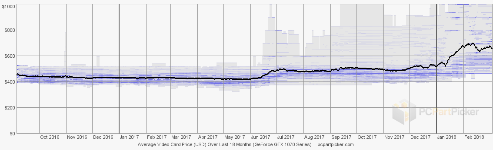

As mentioned earlier, more and more people are getting into the bitcoin network as miners, so the algorithms are becoming exponentially difficult. As a result, people discovered that using graphics cards, a part of a computer that is responsible for displaying content on-screen and rendering elements that are going to be displayed, has a faster hashing rate that CPUs.
Impact on GPUs
As mentioned earlier graphics processing units are the most important in GPU based mining, so they are in high demand. Due to this, the sales for GPUs have skyrocketed over the past few months. For example, the Nvidia GTX 1070 (link to Nvidia’s website including the spec sheet), a graphics card that is very popular among gamers and PC enthusiasts due to it’s brilliant performance in 1440p gaming. This normally retails for around $380, but now it is upto a 1000 dollars with no reference models costing even higher. In addition, to the high price the demand has been so much that it is barely in stock anymore.
Above is a price graph of the GTX 1070 for the last 18 months, the black horizontal line represents the average price, small blue lines show the prices for each individual model of this GPU, and the gray banding show the minimum and maximum.
As you can see, the price was at its normal manufacturer's suggested retail price, unit around mid June. It decreased a little but again went up. After little fluctuations, the price started increasing in January 2018 and hit it’s all time high by early-mid february.